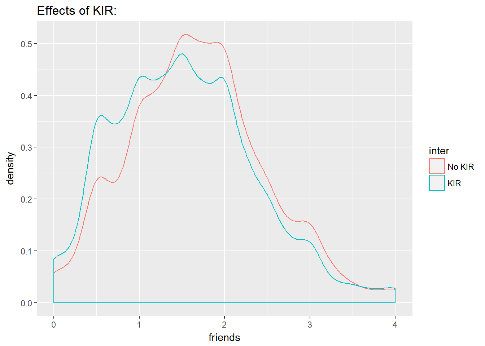

KIR Analysis
Team Clueless
langa = as.factor(projectdata$LANGA)
levels(langa) = c("No", "Yes")
hl = as.factor(projectdata$HL)
levels(hl) = c("No", 'Yes')
friends=projectdata$friends_sexexp
con2 = as.factor(projectdata$CON2)
levels(con2) = c("Agree", 'Neither Agree or Disagree', "Disagree")
inter = as.factor(projectdata$intervention)
levels(inter) = c("No KIR", "KIR")bivariate 1
df4 = na.omit(data.frame(hl,friends))
ggplot(df4,aes(x = friends, col= hl)) +
geom_density() + ggtitle("Perceptions of Freinds Having Sex by Hispanic/Latino:")  analysis: difference in mean
analysis: difference in mean
t.test(friends~hl, data=df4)##
## Welch Two Sample t-test
##
## data: friends by hl
## t = 9.2475, df = 938.91, p-value < 2.2e-16
## alternative hypothesis: true difference in means is not equal to 0
## 95 percent confidence interval:
## 0.2518259 0.3875028
## sample estimates:
## mean in group No mean in group Yes
## 1.886237 1.566572There is strong evidence that Hispanic/Latino and non-Hispanic/Latino students have different perceptions about their friends having sex (p = 2.2e-16).
bivariate 2
df5= na.omit(data.frame(hl,langa))
ggplot(df5, aes(x = langa, fill = hl )) + geom_bar(position = "dodge") + ggtitle("Speak English at Home")
addmargins(table(hl,langa))## langa
## hl No Yes Sum
## No 64 714 778
## Yes 1063 4462 5525
## Sum 1127 5176 6303round(prop.table(table(hl,langa),margin = 1),3)## langa
## hl No Yes
## No 0.082 0.918
## Yes 0.192 0.808analisys: difference in proportion?
prop.test(x=c(714, 4462), n=c(778, 5525))##
## 2-sample test for equality of proportions with continuity
## correction
##
## data: c(714, 4462) out of c(778, 5525)
## X-squared = 55.59, df = 1, p-value = 8.927e-14
## alternative hypothesis: two.sided
## 95 percent confidence interval:
## 0.08747566 0.13279630
## sample estimates:
## prop 1 prop 2
## 0.9177378 0.8076018There is strong evidence that the proportion of students that do speak English at home is not the same for Hispanic/Latino and non-Hispanic/Latino students(p = 8.927e-14).
bivariate 3
ggplot(projectdata,aes(x = friends, col= inter)) +
geom_density() + ggtitle("Effects of KIR:") ## Warning: Removed 68 rows containing non-finite values (stat_density). analysis: difference in mean
df2 = na.omit(data.frame(inter,friends))
t.test(friends~inter, data=df2)##
## Welch Two Sample t-test
##
## data: friends by inter
## t = 7.0008, df = 6328.4, p-value = 2.807e-12
## alternative hypothesis: true difference in means is not equal to 0
## 95 percent confidence interval:
## 0.1017150 0.1808326
## sample estimates:
## mean in group No KIR mean in group KIR
## 1.674346 1.533073There is strong evidence that KIR did effect students perceptions of their friends having sex (p = 2.807e-12).
Multivariable model: We are looking to see if KIR had a different level of effect in students that are Hispanic or Latino.
model = aov(friends~inter + hl + langa)
summary(lm(model))##
## Call:
## lm(formula = model)
##
## Residuals:
## Min 1Q Median 3Q Max
## -1.96459 -0.54251 -0.02009 0.47991 2.59940
##
## Coefficients:
## Estimate Std. Error t value Pr(>|t|)
## (Intercept) 1.84509 0.03845 47.981 < 2e-16 ***
## interKIR -0.14191 0.02007 -7.069 1.73e-12 ***
## hlYes -0.30259 0.03056 -9.901 < 2e-16 ***
## langaYes 0.11949 0.02637 4.532 5.96e-06 ***
## ---
## Signif. codes: 0 '***' 0.001 '**' 0.01 '*' 0.05 '.' 0.1 ' ' 1
##
## Residual standard error: 0.7926 on 6237 degrees of freedom
## (158 observations deleted due to missingness)
## Multiple R-squared: 0.02793, Adjusted R-squared: 0.02746
## F-statistic: 59.73 on 3 and 6237 DF, p-value: < 2.2e-16